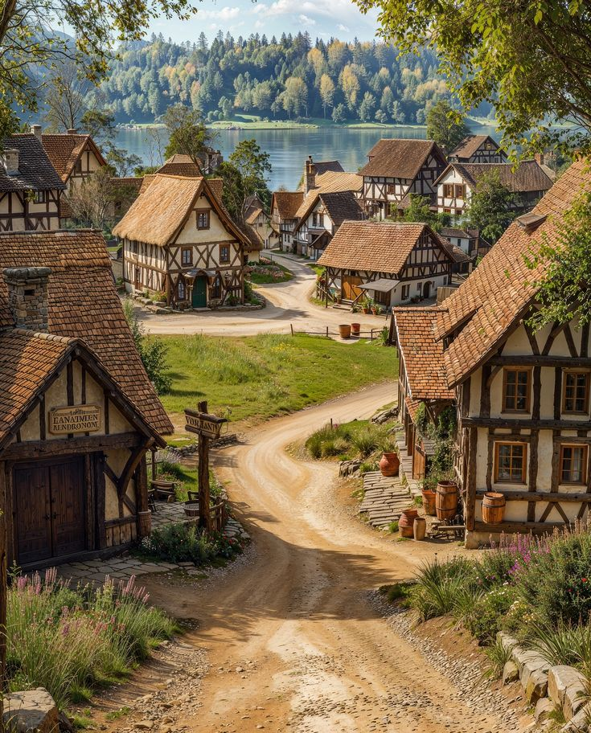
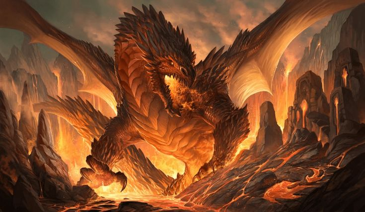
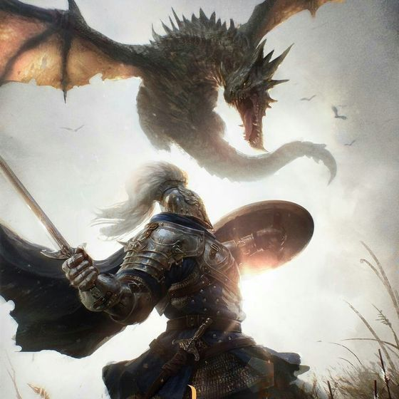
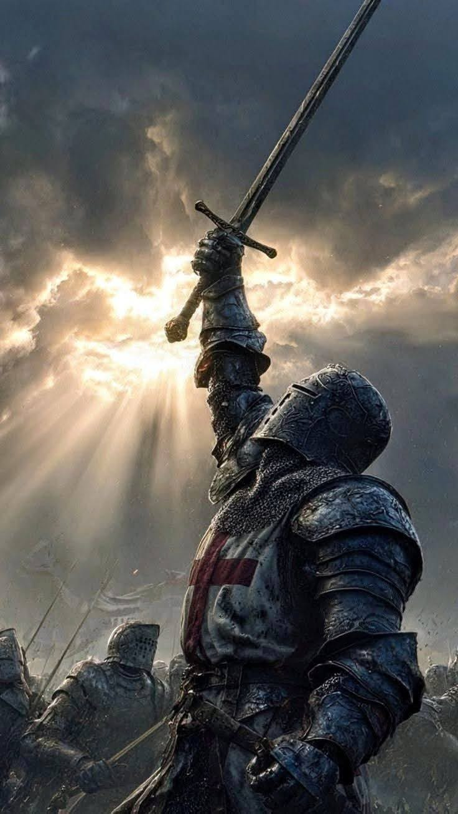

Capítulo 1: O Início da Jornada
Era uma vez, em uma pequena aldeia, um jovem chamado Lucas. Ele sempre sonhou em se tornar um grande herói.

Desde pequeno, foi treinado por seu avô nas artes da espada e da coragem.
Capítulo 2: O Desafio
Uma terrível notícia chegou à aldeia: um dragão aterrorizava cidades vizinhas.

Lucas pegou sua espada e partiu determinado a enfrentar o perigo.
Capítulo 3: O Encontro
Após longa jornada, chegou ao covil do dragão. O medo era grande, mas sua coragem era maior.

A batalha foi intensa e testou tudo que havia aprendido.
Capítulo 4: O Triunfo
Depois de horas de luta, Lucas venceu o dragão e salvou as cidades.

Ele retornou como um verdadeiro herói, pronto para novos desafios.